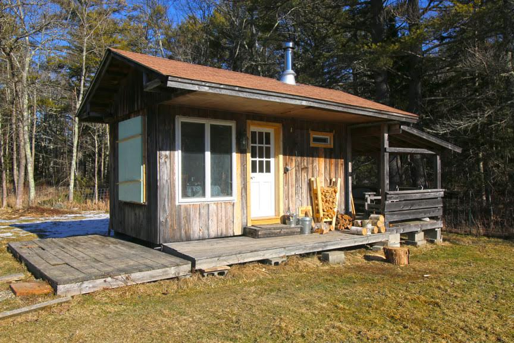
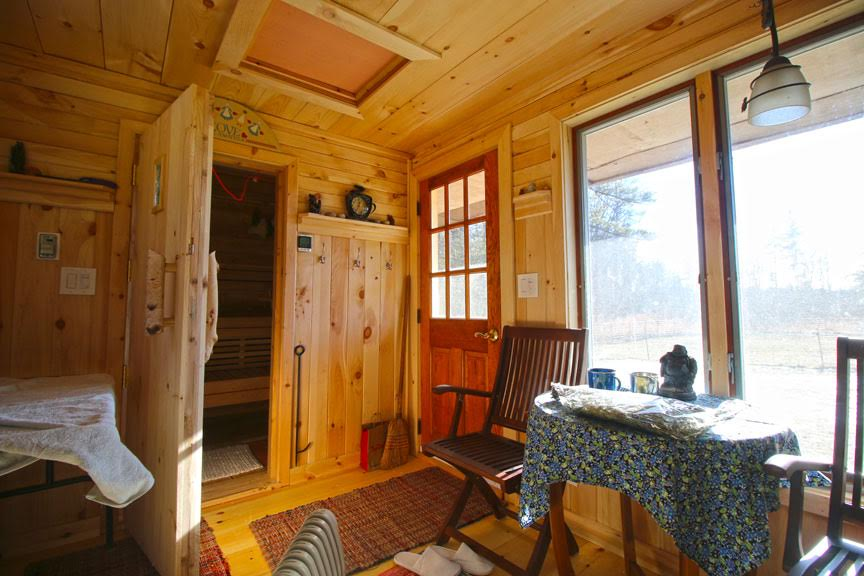
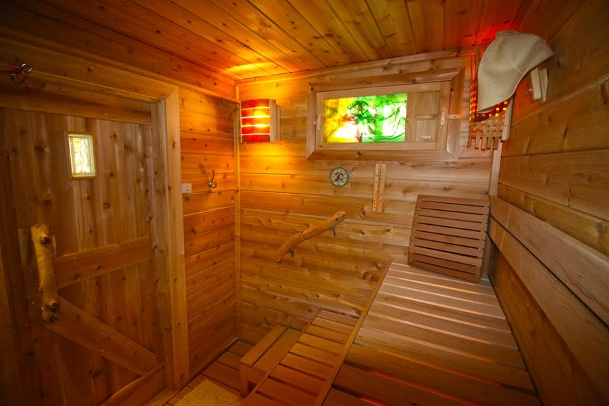
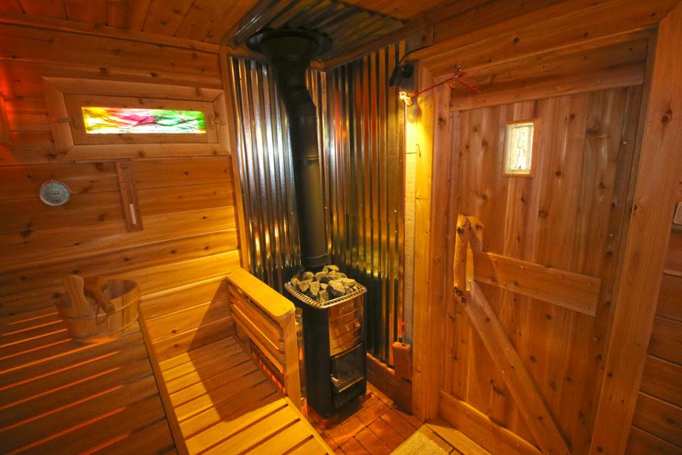
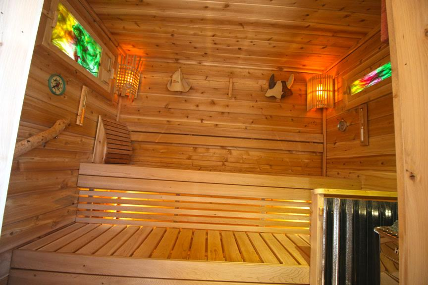
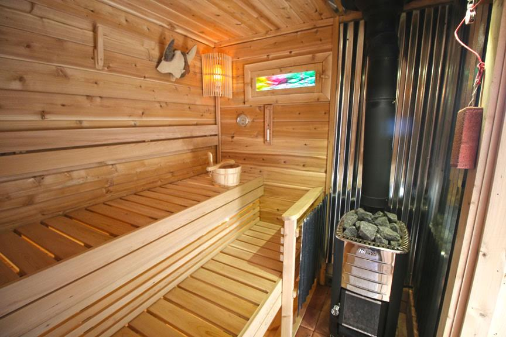

Finnish Sauna
I used local northern white cedar for the interior sauna room purchased from a sawmill here in Maine. Clear for the benches and notty for the walls.
I used cement board on the walls behind the stove (set off the aluminum wrapped walls by 3/4") and then metal roofing with a 1" air spaced by rockwool blocks. I used vinyl transom windows on the sides and buffed the heat contact by making inset wood/glass windows with pieces of silk scarf trapped between two panes. The bench design came from Youtube videos from Finland pro sauna builders site. The changing room is all pine.






Home